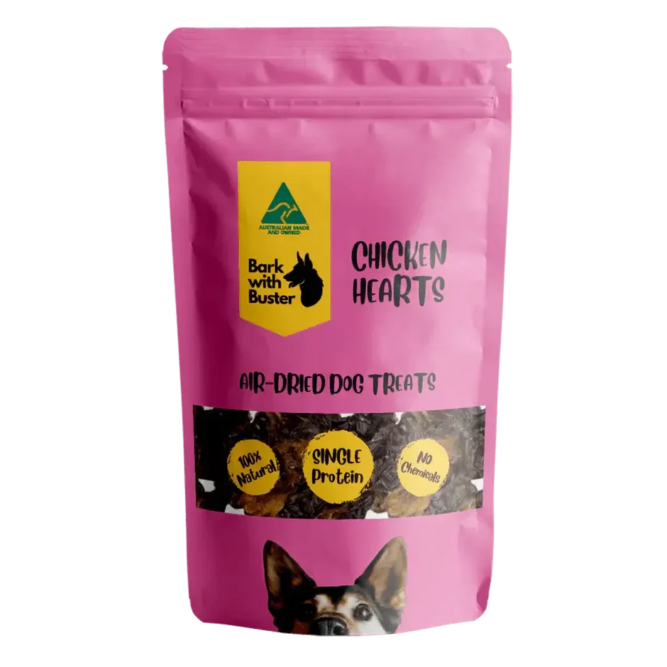
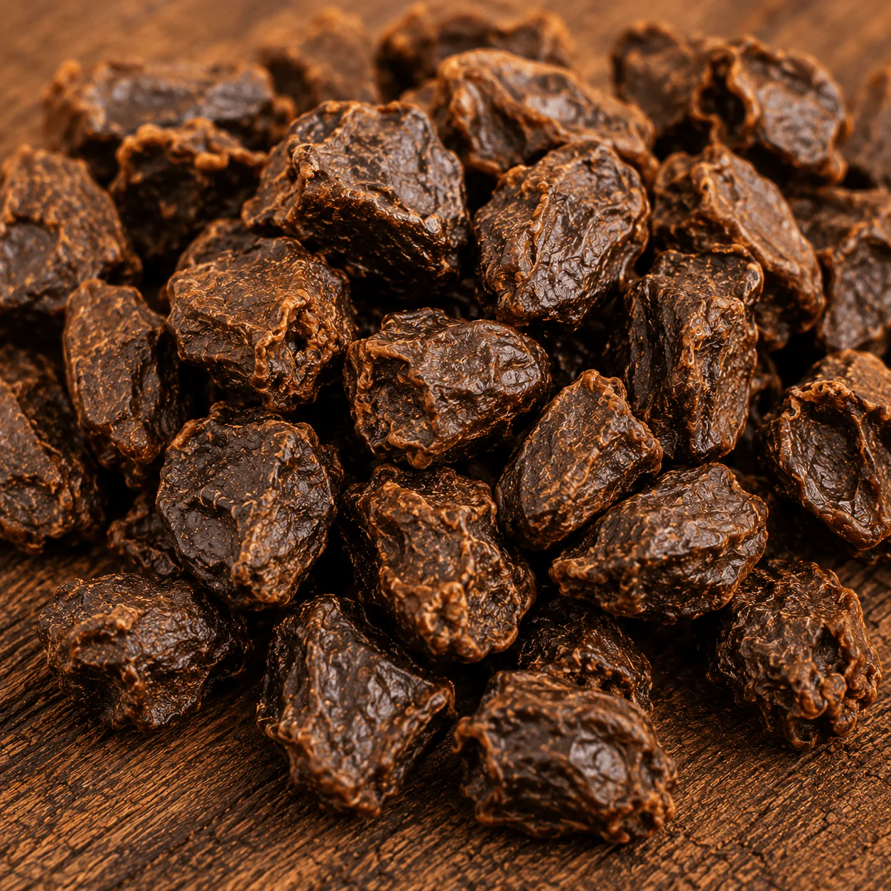
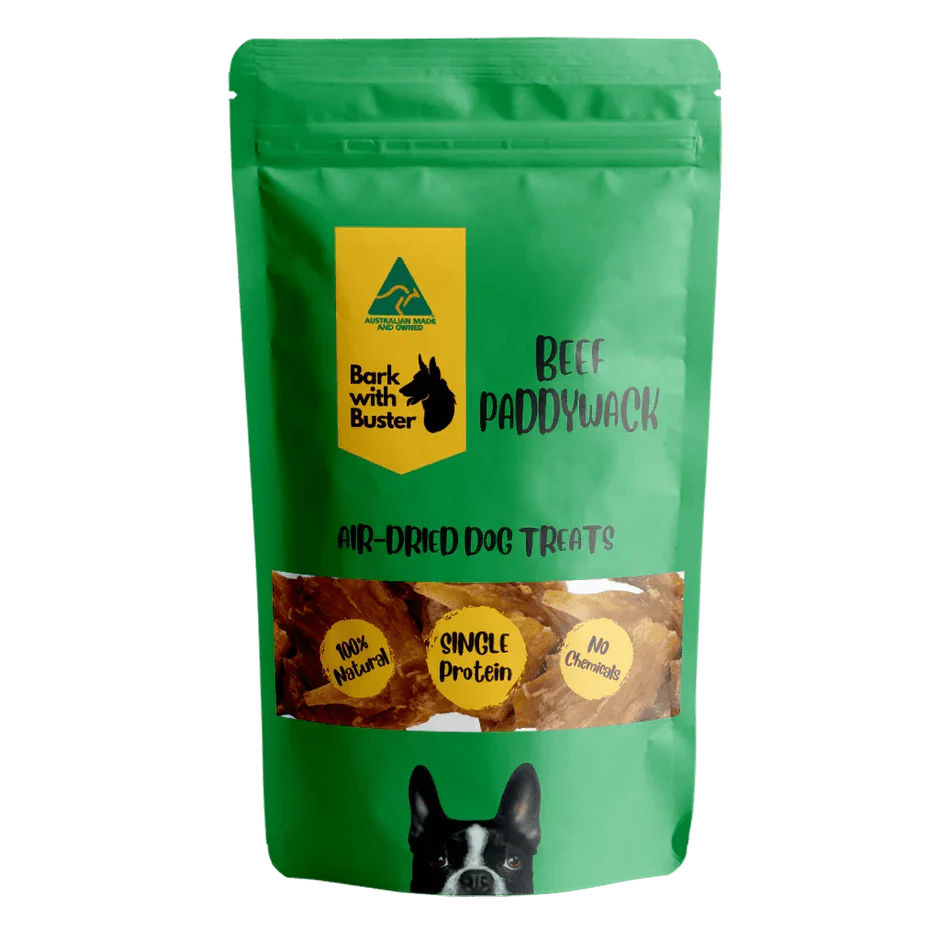

Air Dried Dog Treats
Availability: In Stock
Weight
Quantity
Made from 100% Australian beef lung and gently air-dehydrated, these bite-sized cubes are packed with protein, naturally low in fat, and perfect for frequent rewards without overfeeding.
Feed as a treat or training reward alongside a complete and balanced diet.
Suitable for:
✔ Puppies from weaning age
✔ Adult dogs of all breeds and sizes
✔ Senior dogs
✔ Dogs with grain sensitivities or food allergies
Because chicken hearts are a rich natural organ meat, feed in moderation as part of a balanced treat rotation. Ideal for repeated reward sessions during training. Always provide fresh drinking water.
My dog loves it! She eats it enthusiastically at every meal, and it’s clear she really enjoys the taste. I appreciate that it has a good balance of nutrients. The size and crunch are perfect for her, making mealtime easy and stress-free.
